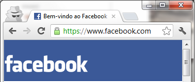
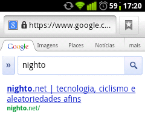

Segurança para
não hackers
Arlindo "Nighto" Pereira
XXVIII Convescote Caos!
15 de agosto de 2012
Arlindo "Nighto" Pereira
XXVIII Convescote Caos!
15 de agosto de 2012
httpsSempre que houver uma atualização disponível, instale.
Isso vale tanto para sistemas operacionais quanto para programas. Atenção especial para plugins como Flash e Java.
O mesmo vale para smartphones.
Sempre que houver uma atualização na iTunes Store ou no Android Market Google Play, instale.
Não usar:
Usar:
Quanto mais caracteres melhor. Mínimo absoluto de 8.
Pegue uma frase qualquer que seja fácil de lembrar, como um verso de letra de música:
"Batatinha quando nasce se esparrama pelo chão"
Pegue as letras iniciais:
Batatinha quando nasce se esparrama pelo chão
= Bqnsepc
Para completar, coloque algum caractere "diferente", como um ponto de exclamação, por exemplo:
Bqnsepc!
Pronto! :)
Você pode criar senhas diferentes ou ter uma regrinha de modificação de senha
Por exemplo: se a sua senha-padrão for Bqnsepc!
sua senha do Gmail pode ser Bqnsepc!_gm
sua senha do Facebook pode ser Bqnsepc!_fb
e assim por diante.
Ou ainda usar um gerenciador de senhas.
Programa que grava as suas senhas, pedindo uma senha-mestre para entrar.
Você pode guardar o arquivo de senhas no email, no Dropbox, no pendrive ou no celular com tranquilidade, pois só há acesso com a senha.
Sugestão: KeePass, disponível para Linux, Mac OS, Windows e com versões para praticamente todos os smartphones.
httpsO s do final se refere a seguro, dados são passados com criptografia (embaralhados).
Usando https, fica mais difícil para usuários maliciosos descobrirem no que você está navegando; sem usar https, sua senha é transferida como "texto puro".
Os navegadores exibem sites com https mostrando um pequeno cadeado junto ao endereço do site.
 
Se o site permitir, usar autenticação por dois passos.
Bancos já fazem isso com cartões numéricos e tokens
Possibilidades: aplicativo, SMS, ligação telefônica
Exemplo: Google Authenticator, disponível para Android, BlackBerry e iOS.
Não usar aplicativos suspeitos
Desconfiar quando algum link pedir autorização
Não confiar num pedido de aplicativo só porque ele veio de um amigo seu
Owned da semana:
Gizmodo - O dia em que caí num golpe do Facebook
Bloqueio com senha
Atenção ao instalar aplicativos "aleatórios"
Gerenciador que permita deleção remota
Existem dois tipos de pessoas no mundo: as que já perderam arquivos e as que ainda vão perder.
Dois lugares diferentes - offline e na nuvem
"Não ponha seus ovos numa só cesta."
Não custa repetir: manter os sistemas atualizados
Não custa repetir: senhas diferentes
Não usar protocolos inseguros
FTP, use SFTPTelnet, use SSHFaça backup regularmente!
Esta apresentação está disponibilizada na licença
Creative Commons Atribuição-Compartilhamento Pela Mesma Licença (CC-BY-SA) 3.0.